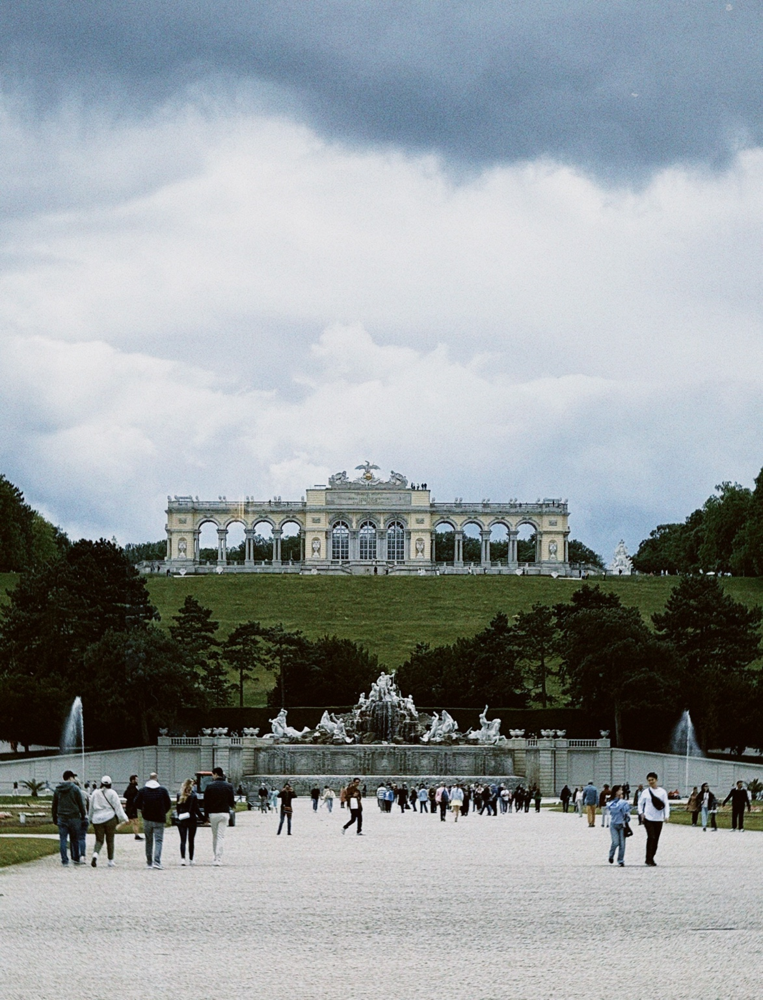

Vienna, 2024
The Gloriette at Schönbrunn Palace in Vienna, Austria, viewed from the palace gardens with its central fountain and visitors in the foreground.

The Gloriette at Schönbrunn Palace in Vienna, Austria, viewed from the palace gardens with its central fountain and visitors in the foreground.